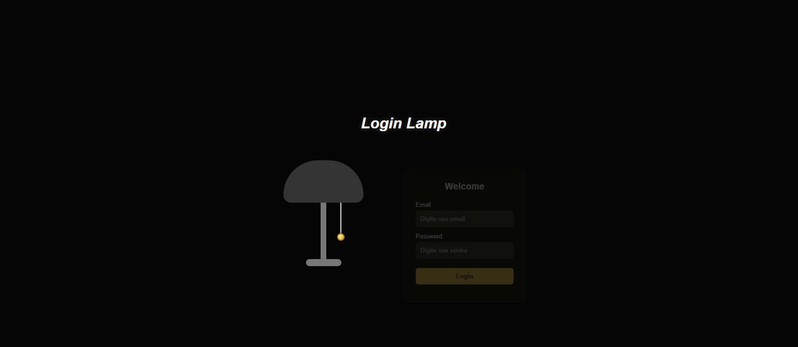
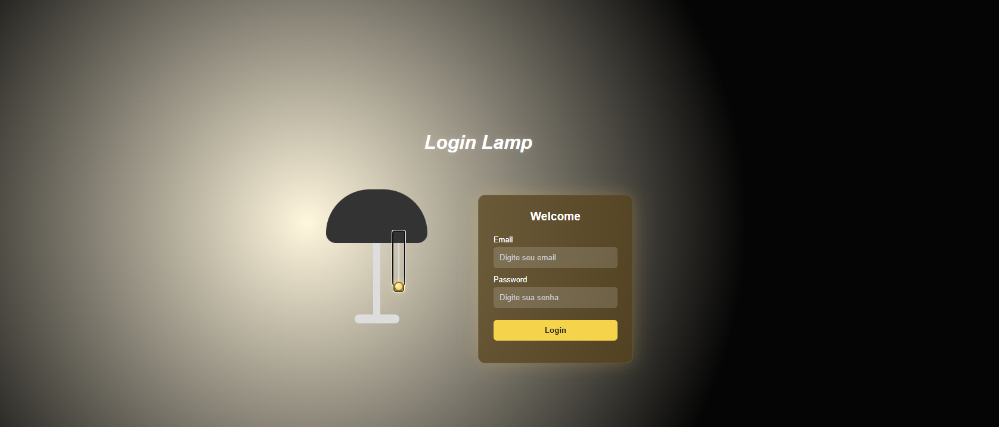
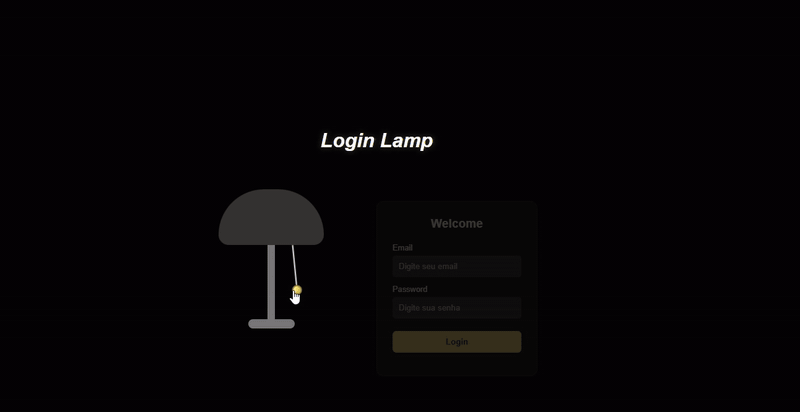

PROJETO FULL STACK
Uma luz diferente para a experiência de login.
Uma interface interativa inspirada em uma luminária: basta acionar o cordão para acender a luz e revelar o formulário de login.
Conheça o projetoPROJETO FULL STACK
Uma interface interativa inspirada em uma luminária: basta acionar o cordão para acender a luz e revelar o formulário de login.
Conheça o projetoDEMONSTRAÇÃO
Veja como a interação com a luminária transforma a apresentação do formulário.



SOBRE O PROJETO
O Login Interativo foi desenvolvido como um projeto de aprendizado Full Stack, combinando uma interface visual diferenciada com tecnologias de desenvolvimento web.